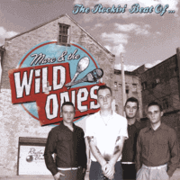

Marc and the Wild Ones - The Rockin' Beat Of... (Album, 2011)
01 - Boppin Mary Lou (2:36)
02 - I'm Not Ready For That (2:27)
03 - Why Did You Make Me Cry (2:24)
04 - Heartbreaker (3:06)
05 - Hey Man (2:14)
06 - Wild One (2:36)
07 - I Aint Got No Home (2:09)
08 - Dreaming Of You (2:05)
09 - Just To See You (2:21)
10 - Rockin Beat (2:30)
11 - Baby What Can I Do (3:28)
12 - Stutterin Cindy (2:26)
13 - Rock With Me (3:05)
14 - Lonesome Rider (4:04)
© Rhythm Bomb Records :: [RBR 5686]
Notes
Review
320/366 (Project 366)
Wild Rock'n'Roll and Rockabilly beat.